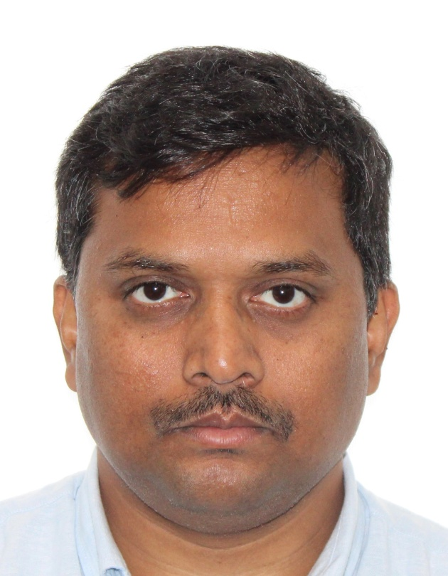

Senior Software and CAE Engineer specialising in automation, simulation workflows, optimisation, and AI-enabled engineering tools for complex mechanical and multi-physics systems. I combine mechanical engineering depth with practical software development to build scalable solutions across geometry preparation, HPC-scale simulation, data handling, and workflow orchestration. My recent work applies AI and data-driven methods to accelerate design optimisation, streamline analysis processes, and support predictive engineering decisions, with a growing focus on agentic AI for NX and CAE environments.
Containerization & DevOps: Docker, Docker Compose, Kubernetes basics
Data Handling: SQL (SQLite, PostgreSQL), HDF5 (large scientific datasets), JSON processing
Cloud & Infrastructure: Linux/Windows environments, HPC job schedulers, bash/PowerShell scripting
Bangalore, India & Derby, UK
Bangalore, India
Bangalore, India
Sriharikota, India
Characterized delamination influence on composite natural frequencies. Conducted experiments using laser scanning Doppler vibrometer and performed finite element model updating for critical damage identification.